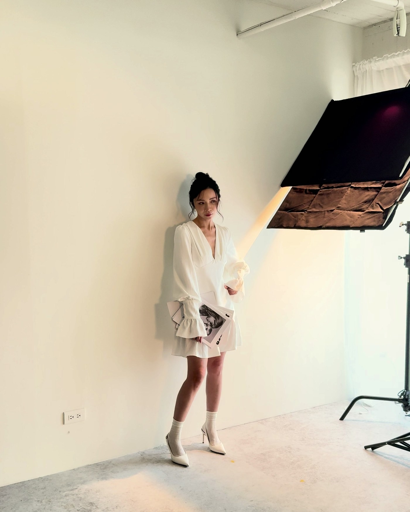
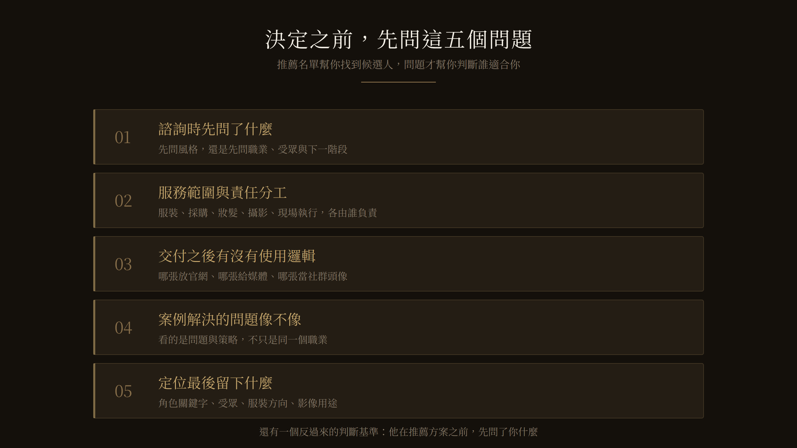

搜尋「形象顧問推薦」，出現的是一頁又一頁的名單、排行榜、媒體文章與個人分享。
看完之後，你知道了市場上有哪些名字，卻仍然不確定該找誰。
因為這件事很難只用名次比較。同樣使用這個職稱，有人以服裝與色彩為主，有人從角色定位開始，也有人提供的是造型與攝影的整合。推薦名單可以替你找到候選人，卻不能替你判斷哪一種服務適合你。名單解決不了的問題，得靠問題來判斷。
第一，諮詢時形象顧問先問了什麼
有人先問你喜歡什麼風格，有人先問你的職業、受眾、使用場合與下一階段。問題沒有標準順序，但對方先了解什麼，通常會透露他準備處理的是眼前的外在選擇，還是背後的角色與方向問題。
第二，服務範圍與責任分工怎麼切
服裝、採購、妝髮、攝影、場地與現場執行，哪些由顧問負責，哪些由合作團隊執行，哪些要你自己準備。也要確認不同專業的意見不一致時，由誰負責統整、由誰做最後的方向決定。
同樣寫著「形象規劃」，有人只給方向，有人會陪同落地，也有人統整完整團隊。先確認責任範圍，才知道報價真正包含什麼。

第三，交付之後有沒有使用邏輯
一組照片完成後，哪張適合官網、哪張提供媒體、哪張用於 LinkedIn、簡報或社群頭像，有沒有清楚的建議。如果你的需求涵蓋官網、媒體、LinkedIn、簡報與社群，就要確認交付之後有沒有使用邏輯。照片交付不等於影像開始發揮作用，缺少用途整理時，再完整的素材也可能停在雲端硬碟裡。
第四，案例解決的問題跟我像不像
不要只看案例是不是同一個職業。兩位律師的市場位置與客群可能完全不同，醫師與理專反而常面對相似的專業可信度問題。更值得看的是：對方原本遇到什麼問題、顧問怎麼判斷、最後用了什麼策略、成果放進哪些場景。好的案例不只展示完成照，也讓你看懂從問題到決策的過程。
第五，定位如何進行，最後留下什麼
定位不是談越久越好，而是談完之後，有沒有形成足以支持後續決策的依據，例如角色關鍵字、受眾、服裝方向、妝髮原則與影像用途。如果定位結束後，接下來仍然只能靠感覺挑衣服與照片，那前面的討論就還沒有轉化成策略。

一個反過來的判斷基準
比起他怎麼回答，更該看的是：他在推薦方案之前，先問了你什麼。
如果對方先理解你的職業、受眾、使用情境與目前的卡點，再決定服務範圍，通常代表前期的顧問規劃占比較高。如果服務主要以棚景、服裝套數、拍攝時間、精修張數與價格分類，重心就比較接近影像製作與檔案交付。
兩種服務都可以買，也可能出現在同一個方案裡。真正重要的是先確認自己買到的是哪一種範圍，不要用其中一種服務的交付內容，去期待另一種服務才承諾的成果。這幾種專業各自處理哪些問題，〈形象顧問是什麼？與造型師、形象管理師、個人色彩顧問的差別〉有完整的拆解。
推薦名單幫你找到候選人，問題才幫你判斷誰適合你。
問完之後，你可能會發現一件事
把這五題記下來。問完幾位候選人之後，你可能會發現，真正難以決定的不是他們，而是自己還沒完全想清楚要解決什麼。
那不是壞事。它通常代表，你需要的第一步是先釐清問題，而不是急著預約任何一種服務。至於不同服務的價格為什麼落差這麼大，〈形象顧問收費怎麼算〉把三種計價邏輯攤開來談。